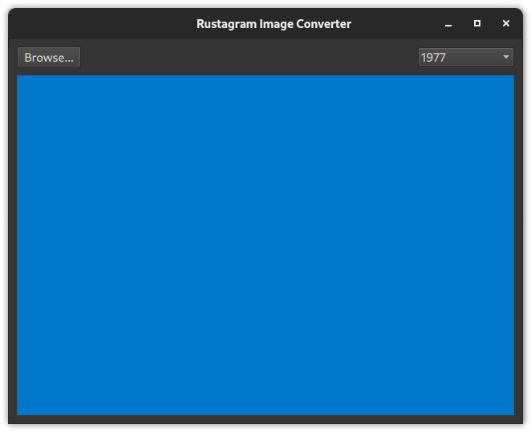

Creating a QQuickPaintedItem in Rust
To render a QImage instance in QML there are two simple approaches
- Subclass
QQuickPaintedItemand use theQPainterinterface - Provide a custom
QQuickImageProvider.
Because QPainter is very versatile and easy to implement with CXX-Qt, we'll use the first approach for our use-case.
✅ Add a new Rust file for the QQuickPaintedItem subclass (e.g. called image_painter.rs).
$ tree -I "target/"
.
├── build.rs
├── Cargo.lock
├── Cargo.toml
├── qml
│ └── main.qml
└── src
├── image_painter.rs
└── main.rs
3 directories, 6 files
Before you do anything else, make sure to
✅ Register this file with the build system
Because we will be using the #[cxx_qt::bridge] macro, we have to register this file twice.
- In the
src/main.rsfile, add a line:pub mod image_painter;
This registers the new file as a module of our application and makes it known to Cargo. - In the
build.rsfile, add the file to the list of rust_files of the QmlModule.
This registers the new file with CXX-Qt. It tells CXX-Qt to generate a C++ class from it, run moc and link the resulting class into our application. This is only necessary because we want to use CXX-Qt within the file. Doing this second step is not necessary for a normal Rust module.
use cxx_qt_build::{CxxQtBuilder, QmlModule};
fn main() {
CxxQtBuilder::new()
// - Qt Core is always linked
// - Qt Qml is linked by enabling the qt_qml Cargo feature.
// - Qt Qml requires linking Qt Network on macOS
.qt_module("Network")
.qt_module("Quick")
.qml_module(QmlModule {
uri: "com.kdab.cxx_qt.demo",
rust_files: &["src/image_painter.rs"], // <- Add all files that
qml_files: &["qml/main.qml"], // include a #[cxx_qt::bridge].
..Default::default()
})
.build();
}It is a common mistake to forget to include CXX-Qt files in the
build.rsscript. Make sure to try removing the file from the list so you know what happens in this case.❓ What error do you get?
Now we can start adding a new QQuickPaintedItem subclass.
CXX-Qt allows us to create new QObject (and therefore QQuickPaintedItem) subclasses.
These subclasses are defined in C++ and their data layout cannot be changed from Rust directly.
Instead, every subclass generated by CXX-Qt contains an instance of a Rust struct.
It is this Rust struct that therefore defines the data layout used within CXX-Qt objects.
We can create a new QObject class for any Rust struct we like.
✅ Create a new empty Rust struct for our class
The struct should implement the Default trait.
Ideally name the struct ImagePainterRust.
Example definition
#[derive(Default)]
struct ImagePainterRust {}Now we can create our QQuickPaintedItem subclass by using a #[cxx_qt::bridge] module.
This bridge module is similar to a header file in C++. It only includes declarations, not definitions. Using the bridge we can declare which items exist in C++ and expose them to Rust. And we can also declare Rust items to be exposed to C++.
The syntax is based on and compatible with CXX. You can read up on CXX in the CXX book.
To create our QQuickPaintedItem subclass, we first need to include the appropriate C++ headers,
then declare the types we want to use from Rust.
For our first example, we'll only set the fillColor and not actually paint anything using the QPainter.
✅ Create a new #[cxx_qt::bridge] module
It should include the following declarations/includes:
- ✅ An import of
QColorfrom cxx-qt-lib (see the CXX-Qt documentation) - ✅ An include to the
QQuickPaintedItemheader - ✅ An include for the
QPainterheader, as well as a declaration of theQPaintertype.
#[cxx_qt::bridge(cxx_file_stem = "image_painter")]
pub mod qobject {
unsafe extern "C++" {
include!("cxx-qt-lib/qcolor.h");
type QColor = cxx_qt_lib::QColor;
include!(<QtQuick/QQuickPaintedItem>);
}
unsafe extern "C++" {
include!(<QtGui/QPainter>);
type QPainter;
}
}Take a look at the CXX documentation and the CXX-Qt-lib documentation.
❓ Is
QColoran opaque or a trivial type? What does this mean when using QColor in Rust?
❓ What's the difference between declaring atype QPaintervs.type QPainter = ...;?
❓ What's the difference betweenunsafe extern "C++"andextern "C++"?
❓ (advanced) Why is theinclude!("cxx-qt-lib/qcolor.h");necessary?
Now that we have our types ready to go, we can declare our new QQuickPaintedItem subclass.
With CXX-Qt this means following these steps:
- ✅ Create a new QObject subclass using
type X = super::Y;with the#[qobject]attribute- This tells CXX-Qt to create a new QObject subclass of the name
X. This class will contain an instance of thesuper::YRust struct which contains the actual data (nothing for now).
- This tells CXX-Qt to create a new QObject subclass of the name
- ✅ Tell CXX-Qt to use
QQuickPaintedItemas our base class using#[base="..."] - ✅ Declare the necessary functions
- ✅ Tell Rust that
setFillColoris inherited fromQQuickPaintedItem - ✅ Declare that
paintshould override the base class implementation and is implemented in Rust.
- ✅ Tell Rust that
- ✅ Tell CXX-Qt that we want a default-constructor for
ImagePainter.- We'll implement this constructor later in Rust.
Whilst we won't be using the
paintfunction right now, we still need to implement it as it is a pure virtual function.If you forget to implement this function, you may get an error like this:
ImagePainter is neither a QObject, nor default- and copy-constructible, nor uncreatable. You should not use it as a QML type. QQmlApplicationEngine failed to load component qrc:/qt/qml/com/kdab/cxx_qt/demo/qml/main.qml:75:9: Element is not creatable.
#[cxx_qt::bridge(cxx_file_stem = "image_painter")]
pub mod qobject {
// ...
unsafe extern "RustQt" {
#[qml_element]
#[base = "QQuickPaintedItem"]
#[qobject]
type ImagePainter = super::ImagePainterRust;
#[inherit]
#[rust_name = "set_fill_color"]
fn setFillColor(self: Pin<&mut ImagePainter>, color: &QColor);
#[cxx_override]
unsafe fn paint(self: Pin<&mut ImagePainter>, painter: *mut QPainter);
}
impl cxx_qt::Constructor<()> for ImagePainter {}
}Some food for thought:
❓ What does the
#[qml_element]attribute do?
❓ Why doespaintneed to be markedunsafe? What happens without it?
❓ Is thecxx_qt::Constructordeclaration always needed? Why is it necessary in this case?Try figuring this out using the CXX and the CXX-Qt books.
Now that we've written our declarations we still need implementations for:
- ✅ The
paintfunction - ✅ The default constructor
Remember that our CXX-Qt bridge only includes declarations. So any definitions go outside the bridge.
#[cxx_qt::bridge(cxx_file_stem = "image_painter")]
pub mod qobject {
// ...
}
impl cxx_qt::Initialize for qobject::ImagePainter {
fn initialize(mut self: Pin<&mut Self>) {
self.as_mut().set_fill_color(&QColor::from_rgb(0, 119, 200));
}
}
impl qobject::ImagePainter {
fn paint(self: Pin<&mut Self>, _painter: *mut qobject::QPainter) {
// Do nothing (yet)
}
}Note that the constructor is implemented using the
cxx_qt::Initializetrait instead of the more complexcxx_qt::Constructor<()>trait.✅ (optional) If you feel up to it, try to replace the
impl cxx_qt::Initializewith a fullimpl cxx_qt::Constructorimplementation.
Now our type should be ready for a first test in our QML GUI.
✅ Replace the placeholder rectangle with an ImagePainter instance in qml/main.qml.
It should now display a more pleasant blue.

If you're having trouble, check out the full example code